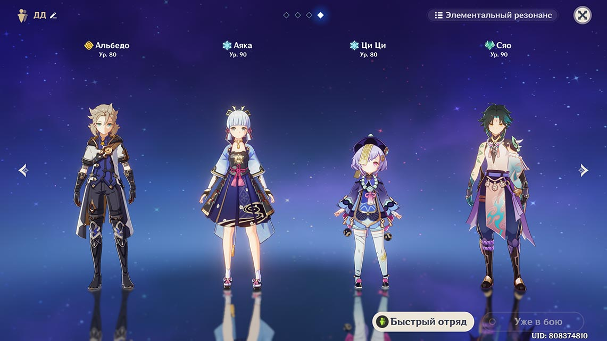

В сольном режиме игрок управляет 4 персонажами. Иногда добавляют ещё одного «бонусного» (при прохождении сюжетных данжей). Вы можете почти мгновенно переключаться между персонажами, комбинируя боевые навыки.
Главной особенностью Genshin Impact является сочетание элементального урона. Используя разные виды нанесения урона (с помощью разных видов стихий: воздух, электричество, вода, огонь, земля) и их взаимодействий (элементальных реакций), вы увеличите область поражения, начнёте быстрее проходить локации как в сольной игре, так и в мультиплеере.

Вот несколько примеров элементальных реакций в Genshin Impact:
Забавный факт: изменение погоды также влияет на бой в игре. Во время дождя персонажи получают статус "мокрый" и получают больше урона от электрических атак, а также от взаимодействия Пиро и Электро элементов. Это касается также и ГГ, поэтому перед боем с боссами с электрическим уроном лучше проматывать время до тех пор, пока не начнёт светить солнце. Так вы сэкономите себе ресурсы и время.
Применять стихии можно не только в бою, но и для решения загадок (например, зажечь несколько факелов, активировать N колонн совместно или по очереди, разбить камень, чтобы освободить фею).